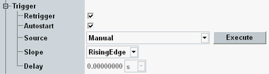

The ARB trigger system controls the start of the selected waveform file.

Progress of ARB file processing To check in single-shot mode whether the ARB file processing is complete, use the sample count command |
Enables or disables the retrigger system for waveform files. With disabled retrigger, the waveform file is started by the first trigger event. The following trigger events are ignored.
Retriggering is only supported for the trigger source "Manual".
- Trigger source is not "Manual".
- The list mode is enabled, see "List Mode".
- A multi-segment ARB file is loaded and the repetition is set to "Continuous" or "Continuous Seamless", see "Baseband > ARB > Trigger > Multi Segment > Repetition".
Enables or disables the automatic start of the loaded waveform file whenever the generator is turned on. With disabled autostart, the file must be started manually ("Execute") or using an external trigger.
Autostart is only supported for the trigger source "Manual".
Remote command:Selects the source of the trigger events used to start the waveform file.
For output trigger signals provided by the ARB generator, see "Arbitrary Baseband Mode".
"Manual" | The file is started from the beginning every time you click the "Execute" button. "Delay" is disabled. |
"Base1: External TRIG A|B" | The first trigger pulse fed in via a trigger connector on the rear panel of the instrument causes a restart. Additional external trigger events are ignored. "Retrigger" and "Autostart" are disabled. The availability of trigger connectors depends on the instrument model. |
"Base1: User Trigger 1|2" | The base software provides user trigger events 1 and 2 that can be raised manually or via remote command. The trigger mechanism is similar to "Base1: External TRIG A|B": Only the first trigger event causes a restart. "Retrigger" and "Autostart" are disabled. |
"Base1: Cont.10ms Trigger" | The base software provides a trigger signal with a trigger pulse every 10 ms. The first trigger event causes a restart. "Retrigger" and "Autostart" are disabled. You can use this source to synchronize several ARB generators running in parallel. |
"Other trigger sources" | Other R&S CMW firmware applications, e.g. "GSM Signaling" (option R&S GSM-KS200) provide additional trigger sources to synchronize the ARB generator. The available sources depend on the installed options. The trigger mechanism is similar to "Base1: External TRIG A|B": Only the first trigger event causes a restart, "Retrigger" and "Autostart" are disabled. |
Qualifies whether the trigger event is generated at the rising or at the falling edge of the trigger pulse. This setting is only relevant for external triggers ("Base1: External TRIG A|B").
Remote command:Sets/gets the trigger delay, i.e. the time delaying the start of the measurement relative to the selected trigger event. The delay is irrelevant for "Manual" execution.
Remote command: